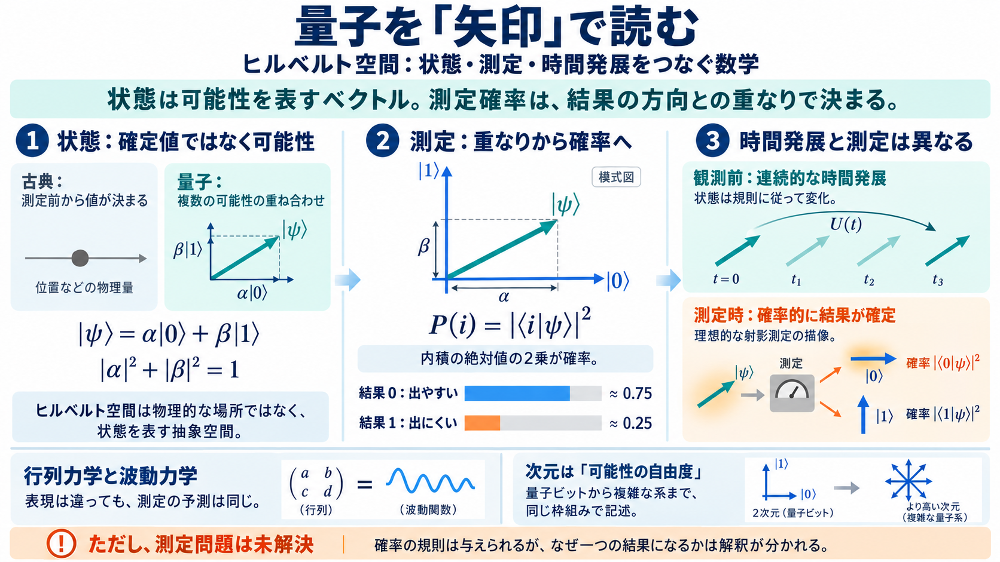

Is the Quantum State Real in the Hilbert Space Formulation?
The contributions of von Neumann and Dirac to the foundations of quantum theory using Hilbert space are considered to be…

The contributions of von Neumann and Dirac to the foundations of quantum theory using Hilbert space are considered to be…
in detail. In this context the relation of quan-tum mechanics to statistics and to the classical statistical mechanics i…
## Is Hilbert Space Real or Just an Abstraction? A century after the birth of quantum mechanics, the theory has left ph…
In the mathematically rigorous formulation of quantum mechanics, developed by John von Neumann, the possible states (mor…
A von Neumann algebra is a \-subalgebra of the set of bounded operators B(H) on a Hilbert space H that is closed in the …